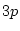
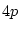
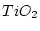
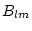

In this chapter hints are given for solving some difficulties that
have occurred frequently. This chapter is by no means complete and the
authors would appreciate further suggestions which might be useful for
other users. Beside the printed version of the users guide, an online
pdf version is available using help_lapw. You can search
for a specific keyword (use  f keyword) and hopefully find
some information.
f keyword) and hopefully find
some information.
If an error occurs in one of the SCF programs, a file program.error is created and an error message is printed into these files. The run_lapw script checks for these files and will automatically stop if a non-empty error file occurs.
Check the files case.dayfile (which is written by init_lapw and run_lapw), :log (where a history of all commands using x is given) and *.error for possible explanations.
In several places the dimensions are checked. The programs print a descriptive error message and stop.
If the SCF cycle stops somewhere (especially in the first few iterations), it is quite possible, that the source of the error is actually in a previous part of the cycle or even in a previous (e.g. the zeroth) iteration. Check in the case.scf file previous charges, eigenvalues, ...whether they are physically reasonable (see SELECT error above).
Approximate linear dependence of the basis set or the linearization of the energy dependence of the radial wave functions (see section 2.2) can lead to spurious eigenvalues, termed ``ghost bands''.
The first case may occur in a system which has atoms with very different atomic sphere radii. Suppose you calculate a hydroxide with very short O-H bonds so that you select small radii for O and H such as e.g. 1.0 and 0.6 a.u., respectively. The cation may be large and thus you could choose a large of e.g. 2.4 a.u. However, this gives a four time larger effective RKmax for the cation than for H, (e.g. 16.0 when you select RKmax=4.0 in case.in1). This enormous difference in the convergence may lead to unphysical eigenvalues. In such cases choose lmax=12 in case.in1 (in order to get a very good re-expansion of the plane waves) and reduce for the cation to e.g. 1.8 a.u.
The second case can occur when you don't use a proper set of local orbitals. In this situation the energy region of interest (valence bands) falls about midway between two states with different principle quantum numbers, but with the same l-value (for one atom).
Take for example Ti with its  states being occupied as (semi-core) states, while the  states remain mostly unoccupied. In the valence band region neither of those two states (Ti , ) should appear. If one uses 0.2 Ry for the expansion energy E(1) for the states of Ti, then Ti-p states do appear as ghost bands. Such a run is shown below for  (rutile).
The lowest six eigenvalues at GAMMA fall between about -1.30 and -1.28 Ry. They are ghost bands derived from fictitious Ti-p states. The next four eigenvalues between -0.94 and -0.78 Ry correspond to states derived from O 2s states, which are ok, since there are four O's per unit cell, four states are found.
The occurrence of such unphysical (indeed, unchemical!) ghostbands is the first warning that something went wrong. A more definite warning comes upon running LAPW2, where the corresponding charge densities are calculated. If the contribution to the charge density from the energy derivative of the basis function [the  coefficient in equ. 2.4,2.7] is significant (i.e. much more than 5 per cent) then a warning is issued in LAPW2.
In the present example it reads:
QTL-B VALUE .EQ. 40.35396 !!!!!!
This message is found in both the case.scf file and in case.output2.
When such a message appears, one can also look at the partial charges (QTL), which are printed under these conditions to OUTPUT2, and always appear in the files case.helpXXX, etc., where the last digit refers to the atomic index.
In the file below, note the E(1) energy parameter as well as the 6 ghost band energies around -1.29.
--------------- top of file:tio2.scf -----------------------------
ATOMIC SPHERE DEPENDENT PARAMETERS FOR ATOM Titanium
OVERALL ENERGY PARAMETER IS .2000
E( 0)= .2000
---> E( 1)= .2000
E( 2)= .2000 E(BOTTOM)= -.140 E(TOP)= -200.000
ATOMIC SPHERE DEPENDENT PARAMETERS FOR ATOM Oxygen
OVERALL ENERGY PARAMETER IS .2000
E( 0)= -.7100 E(BOTTOM)= -2.090 E(TOP)= .670
K= .00000 .00000 .00000 1
:RKM : MATRIX SIZE= 599 RKM= 6.99 WEIGHT= 8.00 PGR:
EIGENVALUES ARE:
-1.2970782 -1.2970782 -1.2948747 -1.2897193 -1.2897193
-1.2882306 -.9389111 -.8484857 -.7880729 -.7880729
-.0484830 -.0162982 .0121181 .0976534 .0976534
.1914068 .1914068 .2341991 .3286919 .3477629
.3477629 .3809219 .5143729 .5356211 .5550735
.5617155 .5617155 .7087550 .7197110 .8736991
.8736991 .9428865 .9533619 1.2224570 1.2224570
1.4285169
********************************************************
NUMBER OF K-POINTS: 1
:NOE : NUMBER OF ELECTRONS = 48.000
:FER : F E R M I - ENERGY = .53562
:POS01: AT.NR. -1 POSITION = .00000 .00000 .00000 MULTIPLICITY= 2
LMMAX=10
LM= 0 0 2 0 2 2 4 0 4 2 4 4 6 0 6 2 6 4 6 6 0 0 0 0 0 0 0 0 0 0 0 0 0 0
:CHA01: TOTAL CHARGE INSIDE SPHERE 1 = 8.802166
:PCS01: PARTIAL CHARGES SPHERE = 1 S,P,D,F,PX,PY,PZ,D-Z2,D-X2Y2,D-XY,D-XZ,D-YZ
:QTL01: .127 6.080 2.518 .067 2.011 2.047 2.022 1.090 .760 .155 .480 .034
VXX VYY VZZ UP TO R
:VZZ01: -4.96856 8.48379 -3.51524 2.000
:POS02: AT.NR. -2 POSITION = .30500 .30500 .00000 MULTIPLICITY= 4
LMMAX=16
LM= 0 0 1 0 2 0 2 2 3 0 3 2 4 0 4 2 4 4 5 0 5 2 5 4 6 0 6 2 6 4 6 6 0 0
:CHA02: TOTAL CHARGE INSIDE SPHERE 2 = 5.486185
:PCS02: PARTIAL CHARGES SPHERE = 2 S,P,D,F,PX,PY,PZ,D-Z2,D-X2Y2,D-XY,D-XZ,D-YZ
:QTL02: 1.559 3.902 .022 .002 1.296 1.306 1.300 .014 .004 .000 .003 .001
VXX VYY VZZ UP TO R
:VZZ02: .25199 -.55091 .29892 1.600
:CHA : TOTAL CHARGE INSIDE CELL = 48.000000
:SUM : SUM OF EIGENVALUES = -15.810906
QTL-B VALUE .EQ. 40.35396 !!!!!!
NBAND in QTL-file: 24
----------------end of truncated file tio2.scf----------------------
Next we show tio2.output2 for the first of the ghost bands at -1.297 Ry. One sees that it corresponds mainly to a p-like charge, which originates from the energy derivative part Q(UE) of the Kohn-Sham orbital. Q(UE) contributes 40.1% compared with 8.5% from the main component Q(U). Q(UE) greater than Q(U) is a good indication for a ghost band.
----------------part of file tio2.output2 --------------------------
QTL-B VALUE .EQ. 40.35396 !!!!!!
K-POINT: .0000 .0000 .0000 599 36 1
BAND # 1 E= -1.29708 WEIGHT= 2.0000000
L= 0 L= 1 PX: PY: PZ: L= 2 DZ2: DX2Y2: DXY: DXZ: DYZ: L= 3
QINSID: .0000 48.6035 35.0996 13.5039 .0000 .0000 .0000 .0000 .0000 .0000 .0000 .0030
Q(U) : .0000 8.4902 6.0125 2.4777 .0000 .0000 .0000 .0000 .0000 .0000 .0000 .0026
Q(UE) : .0000 40.1132 29.0871 11.0261 .0000 .0000 .0000 .0000 .0000 .0000 .0000 .0005
L= 0 L= 1 PX: PY: PZ: L= 2 DZ2: DX2Y2: DXY: DXZ: DYZ: L= 3
QINSID: .1294 .0707 .0000 .0055 .0653 .0088 .0038 .0049 .0000 .0000 .0000 .0022
Q(U) : .1279 .0627 .0000 .0052 .0575 .0087 .0038 .0049 .0000 .0000 .0000 .0020
Q(UE) : .0016 .0081 .0000 .0003 .0077 .0001 .0000 .0000 .0000 .0000 .0000 .0002
QOUT : 1.9265
----------------------bottom of truncated file ----------------------
Another file in which the same information can be found is tio2.help031, since the ghost band is caused by a bad choice for the Ti-p energy parameter:
----------------------Top of file tio2.help031 ---------------------
K-POINT: .0000 .0000 .0000 599 36 1
BAND # 1 E= -1.29708 WEIGHT= 2.0000000
L= 0 .00000 .00000 .00000 .00000 .00000 .00000
L= 1 48.60346 8.49022 40.11324 .00000 .00000 .00000
PX: 35.09960 6.01247 29.08712 .00000 .00000 .00000
PY: 13.50386 2.47774 11.02612 .00000 .00000 .00000
PZ: .00000 .00000 .00000 .00000 .00000 .00000
L= 2 .00000 .00000 .00000 .00000 .00000 .00000
DZ2: .00000 .00000 .00000 .00000 .00000 .00000
DX2Y2: .00000 .00000 .00000 .00000 .00000 .00000
DXY: .00000 .00000 .00000 .00000 .00000 .00000
DXZ: .00000 .00000 .00000 .00000 .00000 .00000
DYZ: .00000 .00000 .00000 .00000 .00000 .00000
L= 3 .00304 .00255 .00050 .00000 .00000 .00000
L= 4 .00000 .00000 .00000 .00000 .00000 .00000
L= 5 .00096 .00082 .00014 .00000 .00000 .00000
L= 6 .00000 .00000 .00000 .00000 .00000 .00000
-------------------bottom of truncated file--------------------------
Note again for L=1 the percentage of charge associated with the primary (APW) basis functions ul (8.5%) versus that coming from the energy derivative component (40.1%).
If a ghost band appears, one should first analyze its origin as indicated above, then use appropriate local orbitals to improve the calculation and get rid of these unphysical states.
Do not perform calculations with ``ghost-bands'', even when the calculation converges.